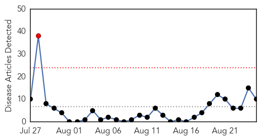
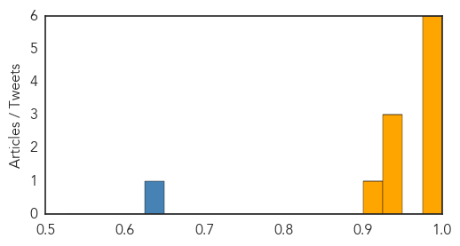
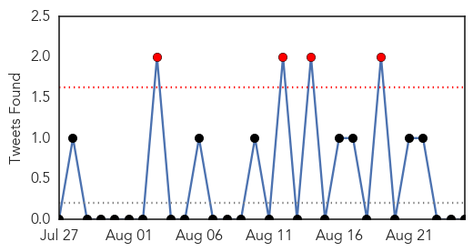
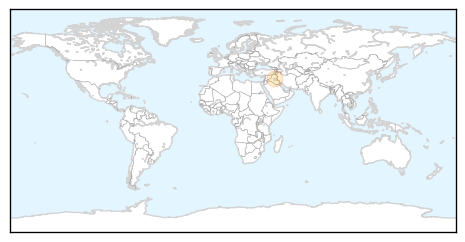

MERS
30-Day Web Trend
1 alerts, 0 warnings

30-Day Twitter Trend
0 alerts, 5 warnings

Article Locations

Article Confidences
Top Articles:
- 0.999
- Schools free of MERS, but exercise caution: Minister
- 0.999
- MERS outbreak in Saudi Arabia, infected Filipino Nurses
- 0.992
- Saudi confirms 49 MERS cases in one week
- 0.986
- Saudi Arabia reports 7 more deaths from MERS
- 0.982
- Saudi- All measures taken to ensure MERS free Haj
- 0.981
- 4 Filipino nurses in Saudi Arabia positive for MERS-CoV
- 0.946
- Philstar Mobile
- 0.942
- US embassy releases tips to avoid MERS CoV infection during Hajj - Kuwait Times
- 0.935
- 4 Philippine nurses have MERS in Saudi
- 0.907
- 4 Filipinos in Saudi Arabia positive for MERS
Top Tweets:
- 0.753
- AFD BLog `Saudi MOH Reports 8 New MERS Cases, 6 Deaths & 6 Recoveries' MERS-CoV http://t.co/m1S8DPwG9c
- 0.627
- RT: @OrlandoBSL3Labs what I meant by isolation that we can establish Quarantine for people who have MERS-CoV
- 0.552
- RT: MERS Corona daily report by Ministry of Health SaudiArabia http://t.co/FmbflXO7rP CoV CoronaVirus Awareness http…
Cholera
30-Day Web Trend
1 alerts, 0 warnings
30-Day Twitter Trend
3 alerts, 0 warnings

Article Locations
Article Confidences

Top Articles:
Top Tweets:
- 0.595
- NEW: Impact of 1 Dose vs. 2 Dose Oral Cholera Vaccine Regimen in Outbreak Settings by http://t.co/5YclM3rM6t